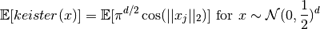

QMCPy Quickstart¶
from qmcpy import *
import numpy as np
Suppose we are interested in calculating

dimension = 2
true_value = 1.808186429263620
abs_tol = 1e-4
def keister(x): # Also implemented in qmcpy/integrands/keister.py
# QMCPy will pass in a numpy ndarray, x, with shape n x d
# n samples
# d dimensions
d = x.shape[1]
norm_x = np.sqrt((x**2).sum(1)) # equivalent to np.linalg.norm(x,2,axis=1)
k = np.pi**(d/2)*np.cos(norm_x)
return k # k.shape should be n or nx1
Step 1: Discete Distribution which generates samples¶
discrete_distribution = Lattice(dimension)
Step 2: True Measure which transforms the Integrand to accept the Discrete Distribution¶
true_measure = Gaussian(discrete_distribution, mean=0, covariance=1/2)
Step 3: Integrand where samples should mimic the True Measure¶
integrand = QuickConstruct(true_measure, custom_fun=keister)
# or integrand = Keister(true_measure) using QMCPy Keister class
Step 4: Stopping Criterion that controls integration process¶
stopping_criterion = CubLattice_g(integrand, abs_tol)
Step 5: Integrate¶
solution,data = stopping_criterion.integrate()
print(data)
print('Within absolute tolerance:',abs(solution-true_value) < abs_tol)
Solution: 1.8082
QuickConstruct (Integrand Object)
Lattice (DiscreteDistribution Object)
dimension 2
scramble 1
seed None
backend gail
mimics StdUniform
Gaussian (TrueMeasure Object)
distrib_name Lattice
mean 0
covariance 0.500
CubLattice_g (StoppingCriterion Object)
abs_tol 0.000
rel_tol 0
n_init 1024
n_max 34359738368
CubatureData (AccumulateData Object)
n_total 65536
solution 1.808
r_lag 4
time_integrate 0.084
Within absolute tolerance: True
Condensed Problem¶
# solution,data = StoppingCriterion(Integrand(TrueMeasure(DiscreteDistribution(dimension)))).integrate()
solution,data = CubLattice_g( # stopping criterion
QuickConstruct( # integrand: QuickConstruct takes a function handle as its 2nd input
Gaussian( # true measure
Lattice(dimension), # discrete distribution
covariance=1/2), # gaussian true measure attribute
keister), # function handle
abs_tol
).integrate()
print(data)
print('Within absolute tolerance:',abs(solution-true_value) < abs_tol)
Solution: 1.8082
QuickConstruct (Integrand Object)
Lattice (DiscreteDistribution Object)
dimension 2
scramble 1
seed None
backend gail
mimics StdUniform
Gaussian (TrueMeasure Object)
distrib_name Lattice
mean 0
covariance 0.500
CubLattice_g (StoppingCriterion Object)
abs_tol 0.000
rel_tol 0
n_init 1024
n_max 34359738368
CubatureData (AccumulateData Object)
n_total 65536
solution 1.808
r_lag 4
time_integrate 0.135
Within absolute tolerance: True
Note¶
The problem above is not meant to be comprehensive, but to be a quick intro to using QMCPy for your integration problem. There are many other implementations of the DiscreteDistribution, TrueMeasure, Integrand, and StoppingCriterion abstract classes. See the other demos, workouts, class implementation, or documentation for further examples, parameters, and use-cases.